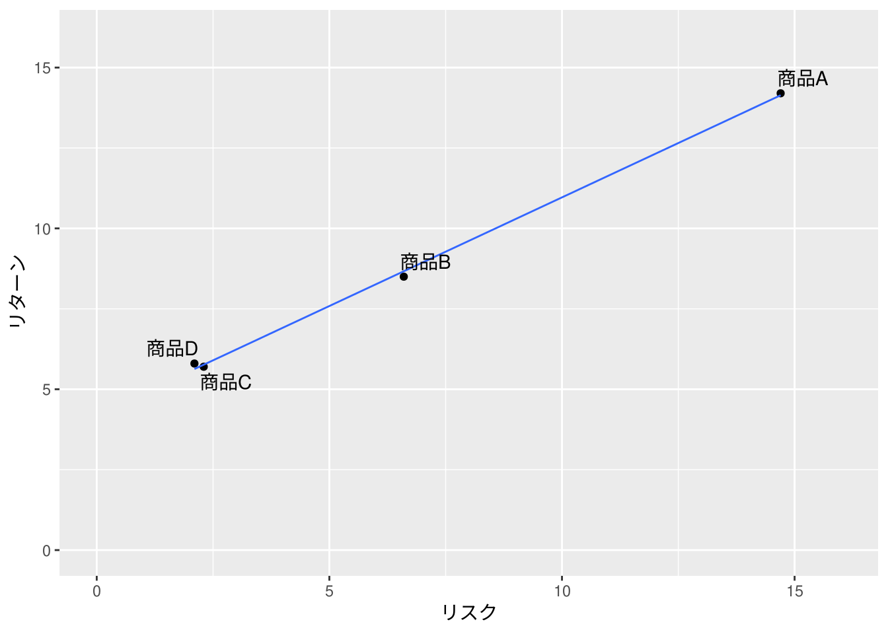

6.1 ハイリスク・ハイリターンとローリスク・ローリターン
ボラティリティとは株の収益率の標準偏差（SD）のことで、収益率は標準偏差分の変動（\(\pm SD\)）が起きるので、それをリスクとして認識すべきです。
P60図表6−1
"./data/P60_図表6-1.csv" %>%
read.csv() %>%
df_print()各金融商品の標準偏差（リスク）と平均値（リターン）は下表のようになります。このデータでの標準偏差（リスク）は標本標準偏差ではないことに注意してください。
P60図表6−1のリスクとリターン
リスク <- "./data/P60_図表6-1.csv" %>%
read.csv() %>%
dplyr::summarise(dplyr::across(.cols = tidyselect::starts_with("商品"),
.fns = sd)) %>%
round(digits = 1)
リスク %>%
df_print()P60図表6−1のリスクとリターン
リターン <- "./data/P60_図表6-1.csv" %>%
read.csv() %>%
dplyr::summarise(dplyr::across(.cols = tidyselect::starts_with("商品"),
.fns = mean)) %>%
round(digits = 1)
リターン %>%
df_print()このようにリターンの大きな商品はリスクも大きい、ハイリスク・ハイリターンであることが分かります。
リスクとリターンの関係
risk <- リスク %>%
tidyr::pivot_longer(cols = dplyr::everything(),
names_to = "商品", values_to = "リスク")
return <- リターン %>%
tidyr::pivot_longer(cols = dplyr::everything(),
names_to = "商品", values_to = "リターン")
risk %>%
dplyr::left_join(return, by = "商品") %>%
ggplot2::ggplot(ggplot2::aes(x = リスク, y = リターン, label = 商品)) +
ggplot2::geom_point() +
ggplot2::geom_smooth(se = FALSE, method = "lm", size = 0.5) +
ggrepel::geom_text_repel()
6.2 金融商品の優劣の測り方
先程の商品A〜商品Dのうち、どの商品が最も優れているでしょうか？実は、この四商品で比較する限り優劣はありません。
6.3 金融商品の優劣を測る数値・シャープレシオ
シャープレシオは下式で定義される金融商品の優劣を比較するための指標です。シャープレシオが高いほどリスクを抑えながらリターンが期待できる効率的なファンドといえます。
\[\mbox{シャープレシオ} = \frac{\mbox{リターンの平均値} - \mbox{無リスク資産の利回り}}{\mbox{リスク（リターンの標準偏差）}}\]
無リスク資産の利回りには国債の利回りを使用する場合が多いようですが、具体的に何を用いているかを記載しているファンドを見たことがありません。参考までに近年の国債の利回りは下表の通りです。
財務省の国債金利情報より
国債の利回りは5年経って約\(0\%\)なので、無リスク資産の利回りを\(0\%\)（利回りはほぼ得られない）と考えるとシャープレシオは下式のようになります。
\[\mbox{シャープレシオ} = \frac{\mbox{リターンの平均値}}{\mbox{リスク（リターンの標準偏差）}}\]
リターンの平均値は、リスクとシャープレシオが分かれば下式で求められます。
\[\mbox{リターンの平均値} = \mbox{シャープレシオ} \times \mbox{リスク（リターンの標準偏差）} + \mbox{無リスク資産の利回り}\]
練習問題
（省略）
実際のデータで確認する
実際のデータではテキストと同じ言葉でリターンとリスクが公開されているわけではありません。証券会社などにより様々な表現がなされていますので、最初に簡単に整理しておきます。
投資信託の基礎知識によれば
利回りとは
投資金額に対する収益の割合のことをいいます。この収益には「利息」だけでなく、投資商品を売却した場合に得られる「売却損益」も含みます。また、通常は1年間の「年利回り」のことを利回りと呼ぶことが多いです。
利回りを数式で表すと下式になります。ただし、手数料や税金などは考慮していません。
\[\mbox{利回り} = \frac{\mbox{分配金} + \mbox{売却益}}{\mbox{投資金額}} \times 100\]
参考までに利率は
一般的に、利率は、債券や預金に対して使われる言葉のため、投資信託では利率とは言いません。
SMBC日興証券では「累積リターン」という言葉を使っていますが、その定義は以下となっていますので利回りと等価といえます。
一定期間内における分配金込み基準価額の騰落率です。
一方、騰落率は
騰落率とは、投資信託の基準価額が、ある期間の間にどのくらい変動したかを、パーセンテージで示します。例えば、基準価額10,000円の投資信託が1年後に11,000円に値上がりした場合の騰落率は10％です。
式では下式となります。ただし、利回りと同様に手数料や税金などは考慮していません。
\[\mbox{騰落率} = \frac{\mbox{期末基準価額} - \mbox{期首基準価額}}{\mbox{期首基準価額}} \times 100\]
ただし、投信総合検索ライブラリーでは「騰落率」を以下のように定義しています。
期間別騰落率は、分配金(課税前)をファンドへ再投資したものとみなして月末時点の修正した価額をもとに計算＊しています。一方、利回りは、分配金込み基準価額の騰落率です。
具体的には用語集に記載されているように下式の定義となります。
(期末の基準価額+期中の分配金の合計)/期首の基準価額-1
この定義を整理すると下式になります。
\[\frac{\mbox{期末準価額} + \mbox{期中分配金}}{\mbox{期首基準価額}} - 1 = \frac{\mbox{期中分配金} + \mbox{期末基準価額} - \mbox{期首基準価額}}{\mbox{期首基準価額}}\]
期末で売却したとすると\(\mbox{期末基準価格} - \mbox{期首基準価格} = \mbox{売却益}\)とみなせ、期首で投資したとすれば、\(\mbox{期首基準価格} = \mbox{投資金額}\)となり投信総合検索ライブラリーでの騰落率は「利回り」と同等であることが分かります。
\[\frac{\mbox{分配金} + \mbox{売約益}}{\mbox{期首基準価額}} = \frac{\mbox{分配金} + \mbox{売約益}}{\mbox{投資金額}}\]
実際に同一銘柄を投信総合ライブラリーとSMBC日興証券で比較すると部分的に若干の差異が認められるものの騰落率と累積リターンが同一指標になっていることが分かります。
ただし、利回りや騰落率は一年間（期首と期末）の数値から求めていることに注意してください。リターンの平均値を知りたい場合は、騰落率ではなく前述したようにシャープレシオとリスク（標準偏差）から求める必要があります。近年の無リスク資産（国債）の利回りは、ほぼ\(0\%\)なので、これは省略しています。
\[\mbox{リターンの平均値} = \mbox{シャープレシオ} \times \mbox{リスク}\]
投信総合検索ライブラリー
楽天証券で扱っているつみたてNISAのファンドのデータを投信総合検索ライブラリーから取得して実際のデータがどのようになっているかをみます。
取得しているファンドは下表の通りです。
商品種別ごとのファンド数
"./data/つみたてNISA_基本情報_2022-06-12.csv" %>%
read.csv() %>%
dplyr::group_by(インデックス型, type) %>%
dplyr::summarise(n = n()) %>%
tidyr::pivot_wider(names_from = インデックス型, values_from = n) %>%
df_print()この中から「追加型/内外/株式」のリスクの平均値・リターン遷移をグラフにします。どのファンドも短期間ではリターンの平均値が非常に悪いことが分かります。
追加型/内外/株式タイプのリスク・リターン遷移
"./data/つみたてNISA_運用情報_2022-06-12.csv" %>%
readr::read_csv() %>%
dplyr::mutate(期間 = forcats::fct_inorder(期間)) %>%
dplyr::left_join(code_list, by = "code") %>%
dplyr::filter(code %in% code_list$code) %>%
# dplyr::filter(期間 %in% c("6ヶ月", "1年", "3年", "5年")) %>%
dplyr::mutate(リターンの平均値 = シャープレシオ * `リスク（標準偏差）`) %>%
dplyr::mutate(label = paste0(fundcode, "(", 期間, "/", シャープレシオ, ")")) %>%
ggplot2::ggplot(ggplot2::aes(x = `リスク（標準偏差）`, y = リターンの平均値,
color = fundcode, shape = インデックス型, label = label)) +
ggplot2::geom_abline(slope = 0, intercept = 0,
size = 0.2, linetype = "dashed") +
ggplot2::geom_point() +
ggplot2::geom_path(linetype = "dotted") +
ggrepel::geom_text_repel(size = 2.5)